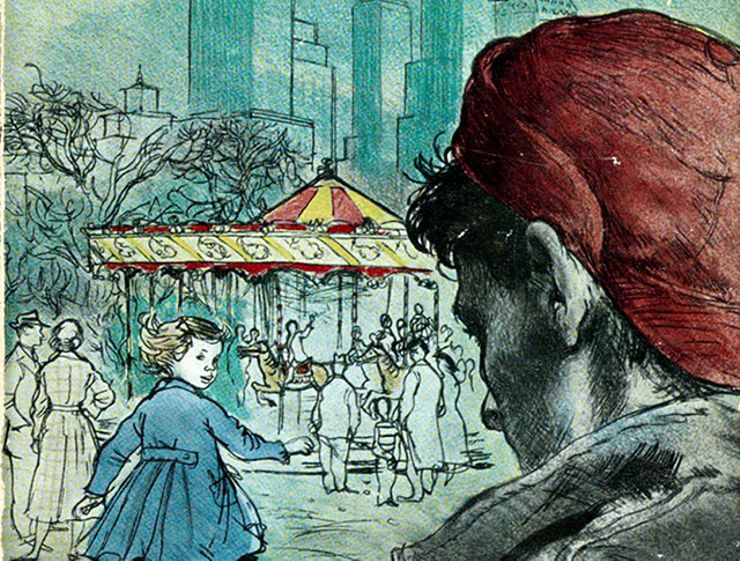
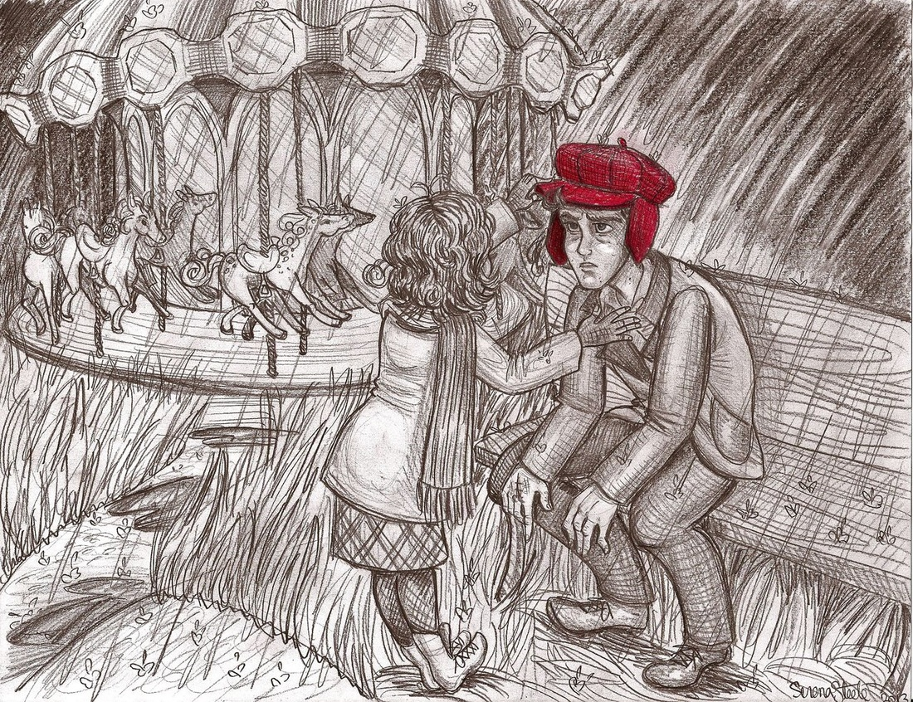
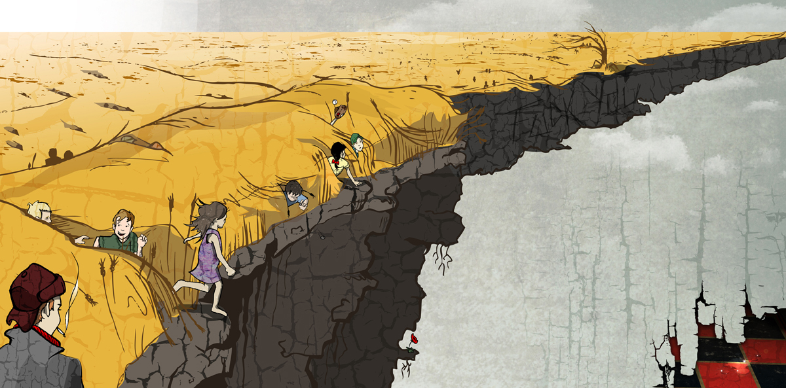

The influential and widely acclaimed story details two days in the life of the narrator and protagonist Holden Caulfield , an unstanble 16-year-old boy who has just been expelled from prep school and sets off to New York before returning home.Confused and disillusioned, he searches for truth and rails against the "phoniness" of the adult world. He ends up exhausted and emotionally ill, in a psychiatrist's office. The events are related after his recovery.